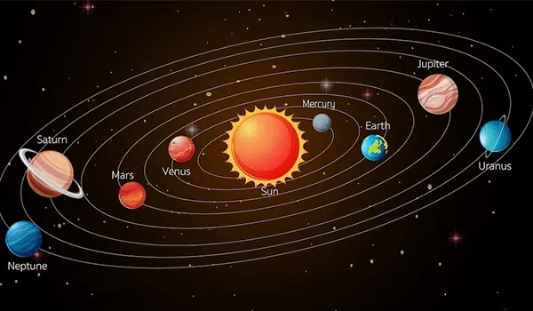

Explore
Introduction
Our solar system consists of our star, the Sun, and everything bound to it by gravity — the planets Mercury, Venus, Earth, Mars, Jupiter, Saturn, Uranus and Neptune, dwarf planets such as Pluto, dozens of moons and millions of asteroids, comets and meteoroids.
Beyond our own solar system, there are more planets than stars in night sky. So far, we have discovered thousands of planetary systems orbiting other stars in the Milky Way, with more planets being found all the time. Most of the hundreds of billions of stars in our galaxy are thought to have planets of their own, and the Milky Way is but one of perhaps 100 billion galaxies in the universe.
Size and Distance
Our solar system extends much farther than the eight planets that
orbit the Sun. The solar system also includes the Kuiper Belt that
lies past Neptune's orbit. This is a sparsely occupied ring of icy
bodies, almost all smaller than the most popular Kuiper Belt Object,
dwarf planet Pluto.
And beyond the fringes of the Kuiper belt is the Oort Cloud. This
giant spherical shell surrounds our solar system. It has never been
directly observed, but its existence is predicted based on
mathematical models and observations of comets that likely originate
there.
The Oort Cloud is made of icy pieces of space debris the sizes of
mountains and sometimes larger, orbiting our Sun as far as 1.6 light
years away. This shell of material is thick, extending from 5,000
astronomical units to 100,000 astronomical units. One astronomical
unit (or AU) is the distance from the Sun to Earth, or about 93
million miles (150 million kilometers). The Oort Cloud is the boundary
of the Sun's gravitational influence, where orbiting objects can turn
around and return closer to our Sun.
The Sun's heliosphere doesn't extend quite as far. The heliosphere is
the bubble created by the solar wind—a stream of electrically charged
gas blowing outward from the Sun in all directions. The boundary where
the solar wind is abruptly slowed by pressure from interstellar gases
is called the termination shock. This edge occurs between 80-100
astronomical units.
Two NASA spacecraft, launched in 1977, have crossed the termination
shock: Voyager 1 in 2004 and Voyager 2 in 2007. But it will be many
thousands of years before the two Voyagers exit the Oort Cloud.
Formation
Our solar system formed about 4.5 billion years ago from a dense cloud
of interstellar gas and dust. The cloud collapsed, possibly due to the
shockwave of a nearby exploding star, called a supernova.When this
dust cloud collapsed, it formed a solar nebula—a spinning, swirling
disk of material.
At the center, gravity pulled more and more material in. Eventually
the pressure in the core was so great that hydrogen atoms began to
combine and form helium, releasing a tremendous amount of energy. With
that, our Sun was born, and it eventually amassed more than 99 percent
of the available matter.
Matter farther out in the disk was also clumping together. These
clumps smashed into one another, forming larger and larger objects.
Some of them grew big enough for their gravity to shape them into
spheres, becoming planets, dwarf planets and large moons. In other
cases, planets did not form: the asteroid belt is made of bits and
pieces of the early solar system that could never quite come together
into a planet. Other smaller leftover pieces became asteroids, comets,
meteoroids, and small, irregular moons.
Structure
The order and arrangement of the planets and other bodies in our solar
system is due to the way the solar system formed. Nearest the Sun,
only rocky material could withstand the heat when the solar system was
young. For this reason, the first four planets—Mercury, Venus, Earth
and Mars—are terrestrial planets. They're small with solid, rocky
surfaces.
Meanwhile, materials we are used to seeing as ice, liquid or gas
settled in the outer regions of the young solar system. Gravity pulled
these materials together, and that is where we find gas giants Jupiter
and Saturn and ice giants Uranus and Neptune.
Potential for Life
Our solar system is the only place we know of that harbors life, but the farther we explore the more we find potential for life in other places. Both Jupiter’s moon Europa and Saturn’s moon Enceladus have global saltwater oceans under thick, icy shells.
Moons
There are more than 150 known moons in our solar system and several
more awaiting confirmation of discovery. Of the eight planets, Mercury
and Venus are the only ones with no moons. The giant planets grab the
most moons. Jupiter and Saturn have long lead our solar system’s moon
counts.
In some ways, the swarms of moons around these worlds resemble mini
versions of our solar system. Pluto, smaller than our own moon, has
five moons in its orbit, including the Charon, a moon so large it
makes Pluto wobble. Even tiny asteroids can have moons. In 2017,
scientists found asteroid 3122 Florence had two tiny moons.
.jpg)